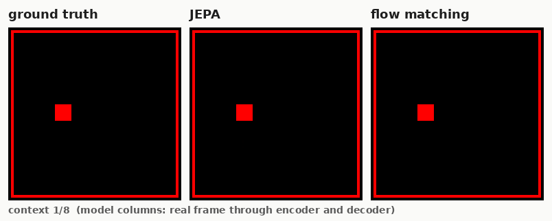
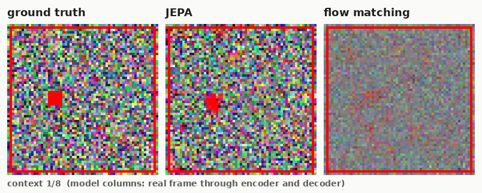
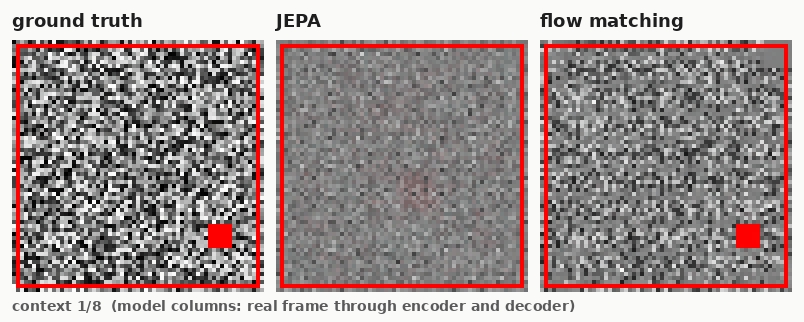
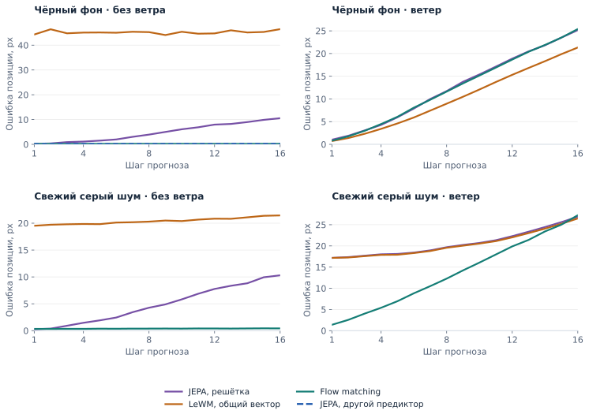
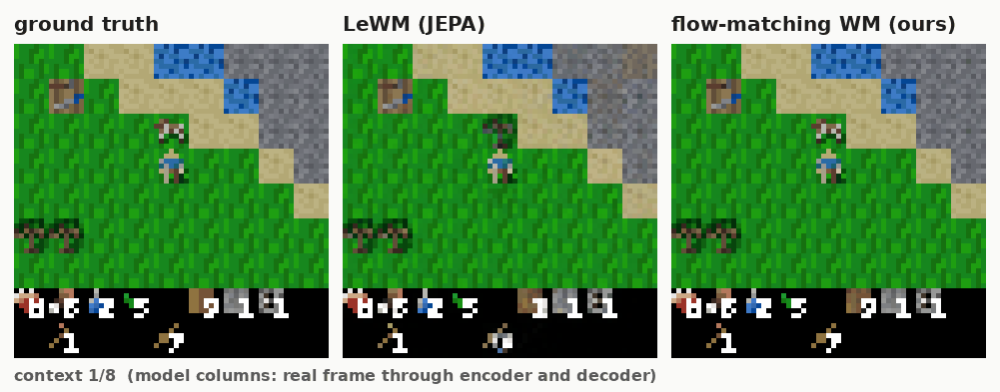
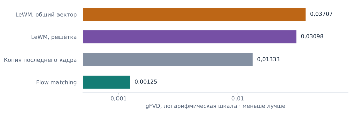
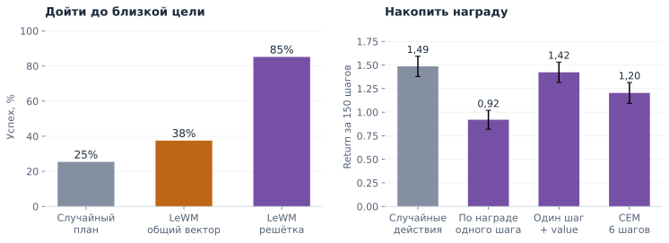

Что Tinycraft говорит
о JEPA и LeWM
От движения одного кубика до планирования в Craftax: где модель теряет мир и что из этого действительно следует.
Мой вывод: работа Claude убедительно показывает уязвимость конкретного рецепта LeWM. Но она ещё не доказывает, что JEPA в принципе непригодна для случайного мира или что генеративная модель уже лучше управляет агентом.
Независимый разбор кода, журналов и сохранённых результатов. Проверены 10 конфигураций кубика, дополнительные архитектуры и эксперименты Craftax. Исходные энкодеры и динамика заново не обучались. Подробности проверки вынесены в техническое приложение.
Дополнение, 19 сентября. Проверили замену декодеров на замороженных моделях: LeWM действительно теряла информацию и при декодировании, а случай flow с цветным шумом этим не исправился. Новые результаты и гифки с полупрозрачной жёлтой пробой.
01Сначала уберём всю случайность
Красный кубик движется по чёрному фону. Действия известны, ветер выключен. Flow matching через восемь шагов ошибается примерно на 0,24 пикселя. LeWM с одним общим вектором кадра ошибается на 45,3, хотя из представления настоящего кадра позиция читается почти точно. Значит, прогноз уже имеет проблему без стохастики. Дополнительная проверка показала и отдельный дефект старого декодера: на настоящих латентах его замена улучшает восстановление, но прогноз этим не исправляется.

Однако другая JEPA с пространственным представлением и авторегрессионным предиктором даёт 0,27 пикселя. Та же функция потерь может работать. Этот дополнительный опыт существенно меняет историю: плохой результат основного варианта нельзя целиком приписать принципу JEPA.1
02Добавим ненужную картинку
Теперь за кубиком шум. Если фон сохраняется весь эпизод, его удобно запомнить: он предсказуем, хотя для движения бесполезен. У LeWM ошибка предсказания латента падает почти до нуля, но позицию кубика проверенные считывающие модели извлекают плохо. Это наиболее убедительный сигнал против обещания, что полезное представление само получится из предсказуемости и защиты от коллапса.
При новом шуме в каждом кадре механизм иной: ошибка LeWM остаётся около 0,74, а не около нуля. Пространственная JEPA без ветра обычно сохраняет кубик, но накапливает ошибку движения. Flow matching чаще точнее; впрочем, на постоянном цветном фоне без ветра проваливается уже она: 22,4 против 6,6 пикселя у основной JEPA. Универсального победителя даже здесь нет.1

03Сделаем случайным само движение
Скрытый ветер превращает будущую позицию в распределение. На чёрном фоне LeWM теперь оказывается лучшей из трёх основных моделей: 9,0 пикселя против примерно 12. Более сложная среда помогла той же архитектуре. Поэтому её прежний провал больше похож на неудачное представление или обучение, чем на универсальный предел детерминированного прогноза.
Но сочетание ветра и свежего серого шума ломает пространственную JEPA в трёх проверенных seed: даже из настоящих латентов позиция читается плохо. Flow matching здесь заметно лучше. Это серьёзный результат об устойчивости рецепта, хотя три запуска одной конфигурации ещё не дают общего закона.1


tile_ar: его ошибка близка к flow. JEPA и LeWM измерены через latent probe, flow через pixel CNN. Серый шум обучался на 500 тыс. переходов, чёрный фон на 100 тыс.; интервалы неопределённости здесь не оценены.Точные числа на восьмом шаге и условия сравнения
| Среда | LeWM общий вектор | JEPA решётка | Flow matching |
|---|---|---|---|
| Чёрный фон | 45,3 | 3,9 | 0,24 |
| Свежий цветной шум | 19,4 | 5,6 | 0,40 |
| Чёрный фон + ветер | 9,0 | 11,7 | 11,6 |
| Свежий серый шум + ветер | 19,6 | 19,7 | 12,3 |
tile_factored; результат 0,27 выше относится к tile_ar. LeWM использует ViT из 6 слоёв. Позиция читается из латента у JEPA/LeWM и из декодированного кадра у flow: это разные измерительные тракты. Между строками различается и объём обучения: 100 тыс. переходов, для серого шума 500 тыс.Сцены кубика взяты из существующего отчёта: автоматически выбраны окна с наибольшим движением по реальной траектории. Они не являются случайной выборкой и не заменяют усреднённые графики.
Есть принципиальная граница: расстояние от среднего будущего до цели не равно средней стоимости возможных исходов.
LeWM с точечным прогнозом не учитывает второй член. Но ветер в этой игрушке не зависит от действия; отдельного опыта с выбором между безопасной и рискованной веткой нет. И сравнение одного сэмпла flow с одним реальным будущим не проверяет правильность распределения. Теоретическое возражение верно, его причинная связь с этими провалами пока не установлена.
04Перейдём к настоящей игре
В Craftax генеративный рецепт гораздо лучше по gFVD: около 0,00125 против 0,031–0,037 у декодированных прогнозов LeWM. Это расстояние в признаках случайной CNN, а не процент ошибки мира. Из него нельзя заключить, что управление стало в 25 раз лучше.2


normuon_head_bridge_s0. По этой метрике обе версии LeWM хуже копии последнего кадра. Это сравнение декодированных видео, не качества политики.Пространственная LeWM достигает близкой цели за четыре действия в 85% случаев против 25% у случайного плана. Но это один план, исполненный без перепланирования. Более трудная проверка, накопление награды за 150 шагов, пока не удалась: CEM даёт 1,20 против 1,49 у случайной политики; ансамбль голов ситуацию не исправляет. Это провал связки представления, динамики, голов и поиска. Аналогичного сравнения с flow-политикой здесь нет.3

05Что это значит для LeWM и Dreamer 4
Я вижу у LeWM две разные обязанности, которые её цель обучения не гарантирует: сохранить важное для решения и правильно учитывать неопределённость. SIGReg борется с вырожденным представлением, но сам по себе не выбирает полезные признаки. Детерминированное продолжение среднего может также потерять существенные развилки будущего.
AE с генеративной динамикой делает другой выбор: реконструкция заставляет сохранять наблюдаемые детали, а сэмплирование позволяет представить несколько будущих. Это направление действительно ближе к Dreamer 4, где есть токенизатор, shortcut forcing в латентах и обучение политики в воображении. Но Tinycraft проверяет собственный небольшой рецепт, не воспроизведение всего Dreamer 4. Ни реконструкция, ни диффузия автоматически не гарантируют правильных вероятностей и хорошей политики.4, 5
Насколько строг этот результат
Как диагностика работа сильна. Совпадают хеши данных у моделей внутри конфигураций, отделены ошибки представления и прогноза, исследованы дополнительные архитектуры. Восемь существующих тестов порта проходят. Как причинное сравнение методов работа пока недостаточна.
- Меняется больше, чем loss. У flow есть временной токенизатор, другие длина обучения последовательностей и оптимизатор, дополнительные потери и обработка истории. Бюджет тоже не всегда равен: встречаются 710 секунд у flow и 609 у JEPA вместо заявленных 600.
- Проверяется ограниченная выборка. Основная оценка исключает окна со смертью; окна перекрываются. Повторы seed неполны, отдельного финального теста после подбора решений не предъявлено.
- Есть конкретный дефект для следующего этапа. В flow-рецепте награда смертельного перехода исключена маской обучения. Для кубика это вся ненулевая награда. До исправления и проверки голов делать выводы об обучении политики внутри этой модели нельзя.
- Часть формулировок слишком сильна. Неудачный probe не доказывает отсутствия информации; простая экстраполяция ветра не является нижней границей ошибки; сохранение разброса между разными сценами не исключает усреднения будущих внутри одной сцены.6
Следующий решающий опыт
Нужны одинаковая архитектура энкодера и бюджет, несколько seed и три варианта: детерминированная динамика на AE-латентах, JEPA и генеративная динамика. Затем отдельный тест рискованного выбора с известными вероятностями и проверка реального управления, включая смерти. Так можно отделить пользу реконструкции от пользы моделирования распределения.
Пока я бы выбрал генеративный AE-рецепт как более убедительную основу симулятора, а результаты LeWM считал предупреждением о её ненадёжных предпосылках. Отказ от реконструкции остаётся разумной идеей; автоматическое появление достаточной для управления модели мира из MSE и SIGReg эти опыты не подтверждают.
Что именно проверено и что осталось за пределами обзора
Прочитаны код обучения, оценки, probes, планировщиков, диагностик, генерации отчётов и заготовка PPO. Сопоставлены 109 строк оценки кубика и метаданные 117 checkpoint; обучение повторно не проводилось. Код train.py и bench.py локально совпал с текущей копией на сервере. В результатах кубика не найдено завершённых control, baselines и PPO final.json; наличие соответствующих скриптов не считается результатом. Тесты проверяют отдельные свойства порта, а не полное численное совпадение с PyTorch.
На шуме, постоянном внутри эпизода, гипотеза о сохранении фона согласуется с малыми predictive loss. На покадровом шуме большой loss указывает на другую проблему. Для доказательства причин нужны вмешательства: менять фон при неизменной позиции, менять позицию при неизменном фоне, сравнивать несколько будущих из одного состояния. Наблюдение «ветер помог LeWM на чёрном фоне» само по себе не объясняет, почему это произошло.